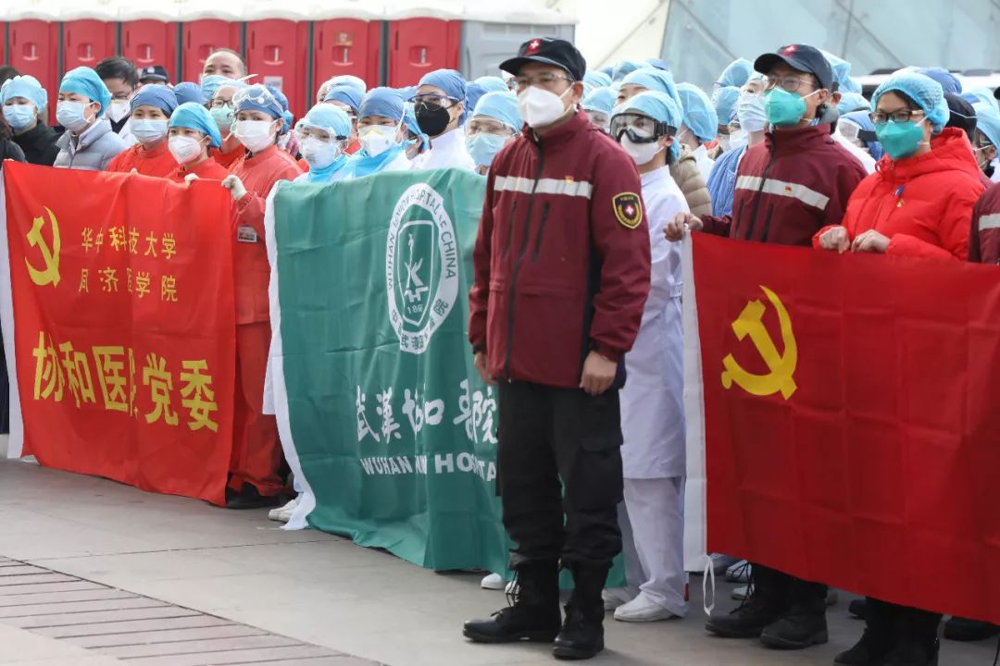
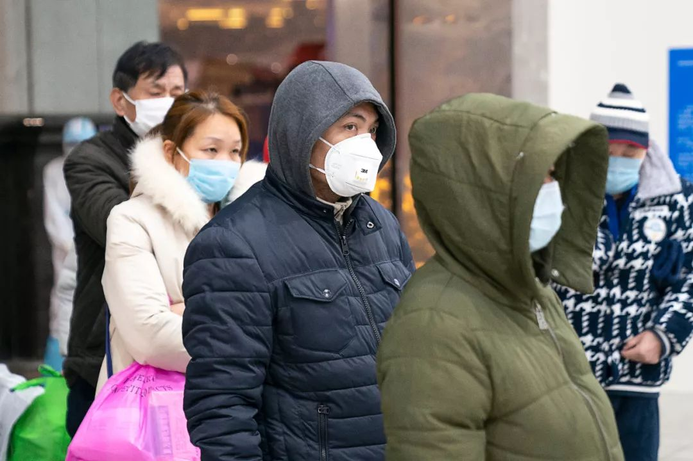
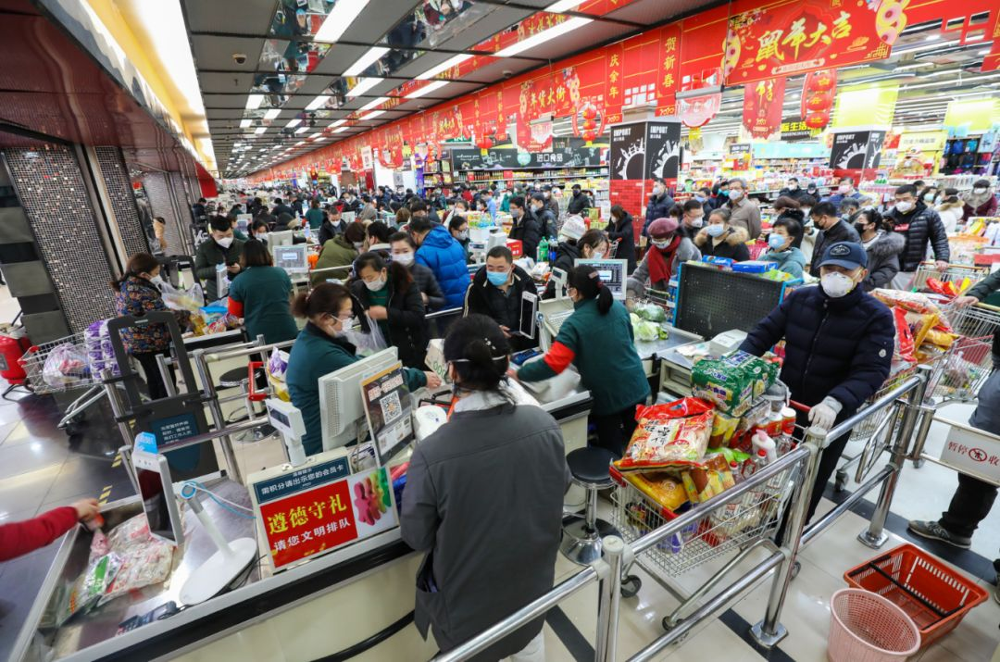
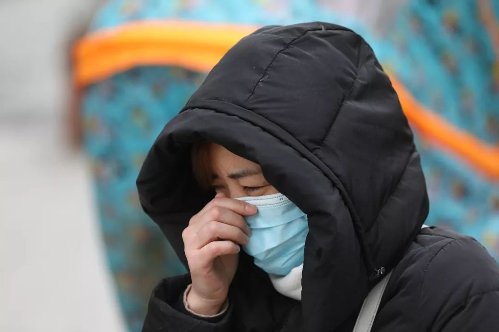

「在疫区，中年人没有地方可以哭」｜武汉心理咨询师的510通电话
原文链接 备份链接 北大精神卫生研究所曾在2004年做过一项调查，发现SARS痊愈出院的病人3个月内抑郁状态和焦虑状态的检出率分别是16.4%和10.1%。严重传染性疾病与一系列精神疾病存在联系，根据国内外的研究，重大灾难后精神障碍的发生 …

中国科学院心理研究所的研究员高文斌，是2003年北京小汤山“SARS患者与医护人员的心理干预”项目和“中科院心理所非典心理咨询热线”的负责人。
在接受本刊采访时，他认为，这次新冠疫情，尤其需要加强社会层面的心理引导和干预，“2003年非典造成的医疗直接支出，只占整个社会经济损失中的一小部分，其他大部分，包括相关生活、生产和受其影响的其他经济活动，都是由于从个人到社会群体的一系列过激连锁反应，以及一些不恰当的心理行为导致的。”
记者 | 陈璐
三联生活周刊：身处抗疫一线的医护人员很多出现了情绪波动甚至崩溃的问题，根据您在非典期间的经验，该如何应对？
高文斌：严重的公共卫生事件发生后，最早介入的医护人员，因为休息时间不够，替换人员也不够，工作时间长、强度大，一系列压抑、恐惧的心理反应会出现。这次武汉情况也类似，所以现在全国组织力量及时派出医疗队伍支援。

远征 摄
目前这个时间节点，医护人员比较多会出现两种心理问题。一种是有的医护人员产生放弃心理。当时在北京最早一批隔离医院里，有医护人员在污染区扯掉防护面罩，觉得反正也搞不清楚怎么办，还不如先好好喘口气，这就很危险。还有一种是医护人员对自己的价值感产生质疑。在很多不可控的情况下，尤其是年轻的医护人员，可能会觉得干这个事情没什么用，看不到希望。
根据抗击非典的经验，建议发挥一些经验丰富、信任感强的医护人员的行为示范作用，例如高年资的护士长，在团队中会起到很好的效果。他们甚至可以不进污染区，只在外围换衣服、消毒的过程中做一些事情，同样可以起到示范和稳定军心的作用。

远征 摄
三联生活周刊：患者面对医疗资源紧张、看病难的情况可能会出现一些冲动行为，这是患者心理问题的一种典型反映吗？
高文斌：我认为极端事件还是少数。虽然出现了个别患者的冲动行为，但面对不配合治疗的应对效果应该会比非典时期有所好转。根据非典时期经验，患者不配合往往是因为对于病的描述和预期不是很清楚，再加上本身的病痛症状，**但这一次因为有了前车之鉴，医护人员在应对过程中会做出相应解释和说明。
**
另一方面，也和重症患者的年龄有关。非典期间不少重症患者都是青壮年，这个年龄段本身生命力很活跃，突然间这么大一个反差，自己不太能够接受，容易引起冲突。虽然这次疫情的数据到目前还不是很准确，但通过刚刚这一周的情况来看，重症患者集中在年龄相对较大的老人和年纪较小的儿童（低龄儿童患者一般偏向参考重症关注治疗），需要提醒家属理性对待。

远征 摄
为了应对此类事件的发生，我们建议医院在医护人员上岗前和遇到突发事件后，提供专门的心理帮助。另外，一定要在患者入院时进行心理健康教育，这部分工作平时在正规的医院也都有，但在这个特殊的时期，告诉患者可能发生的事情、如何自我调节、遇到情况找专人寻求帮助，就更重要。
这一次新冠疫情中，患者否认和回避等心理问题较为突出，这也是为什么好多人跑，甚至躲起来的原因。这其实造成了很多治疗上的耽误，甚至更大范围的污染。如果患者能够认同这个疾病需要治疗，就能恢复到一个正常心态。
三联生活周刊：情绪问题会对患者的病情造成影响吗？
高文斌：我们当时很快发现，有些病人症状的加重或者说是不稳定，跟他的情绪状态关系很大。人身上有很多交叉的神经系统，呼吸既是这个疾病的主要症状，又是受情绪影响最大、最直接的一套系统。病人一旦恐惧紧张，就会有种喘不上气儿的感觉，实际上他本来也喘不上气，这就加重和混淆了一些状态。所以我们送了一大批材料去小汤山医院，病人可以规律性地听10分钟到20分钟，自己做呼吸训练来辅助治疗。

远征 摄
三联生活周刊：非典时期，医生和病人的心理问题是怎么得到改善的？
高文斌：北京小汤山医院真正运转起来以后，情况就好了很多。首先基础的物资保障基本到位，流程也越来越清晰，医护人员更多开始琢磨一些临床的个体诊疗，具体到每个病人的细化方案，患者也对自己的状况有了心理准备，大家能够回归到正常状态。并且，北京小汤山医院当时还调了一批部队医院心理科、中科院心理所等机构的人员，去帮助前线医患人员。
现在据我了解，武汉医务人员配备的队伍里面，也已经有了心理科或者精神科的医生。目前武汉疫情的防控问题仍是第一位的，但在国家卫健委疾病预防控制局的详细诊疗方案中，有关心理干预的部分已经出来了，情况应该会逐渐好转。
三联生活周刊：**武汉这次的疫情扩散比非典时更严重，公众普遍产生了焦虑情绪，该如何缓解？
**

远征 摄
高文斌：现在倡议大家戴口罩，见面不握手，一段时间过去，就可能会养成习惯，那么我们和人交往的亲密方式就会发生变化。尤其是，现在公众将武汉市甚至整个湖北地区都视作“疫区”，对这些地区来的人，会产生一种“心理距离”的加大，影响正常的社会来往。“心理距离”是社会心理学的一个基础概念，主要影响因素是信任感、亲密程度和安全感。如果简单折算成物理空间，就是根据我们和一个人熟悉程度的不同，谈话时保持的空间距离会不一样。
目前属于严控期间，多数人还没什么感觉。但过一阵子开始上班，单位里严防死守，人们的心理距离突然拉大，那么你的孤立感或者不安全感就会增加。所以有关政府机关和大型企事业单位应该开始有序地应对新型冠状病毒，做好至少一到两个月的过渡引导，帮助大家平衡工作和生活。
三联生活周刊：很多地方还出现超市扫空、口罩疯抢的情况，怎么办？
高文斌：如果之前没经历过这类突发疫情，民众心态肯定很难平稳。政府能做到的是对基本物质的保障和宣传，要对居民的一些生活必需品有所承诺。其实整个国家的生产没有受到重大影响，正常的物资保障没问题，现在是民众需求过度。

远征 摄
举个例子，每个超市都有它自己的备货周期，都是按照平常的货量计算。比如盐，备货量可能只够人们一周均匀地去购买，但由于疫情，大家突然在一天就把盐买空了，备货周期不够，第二天去肯定还是没有，恐慌这个时候就出现了。口罩也是一样，14亿中国人原来才多少人戴口罩，现在突然每个人都戴，不断货才怪。所以对社会心态的疏导需要具体化，从油盐酱醋茶开始引导，越具体老百姓越踏实。
三联生活周刊：现在社会上出现了各种过激反应，像很多地区为了抗疫，断掉各种交通要道，您怎么看？
高文斌：社会公众的心理问题，可以分为三个阶段。第一个阶段是疫情刚开始时，人们觉得事不关己，自我防护意识不强；第二个阶段是开始出现过激反应；第三个阶段，心理问题会开始增多，情况出现分化，甚至不一定和疫情相关。
现在我们正处在第二个阶段。前两天交通部、公安部都出面说不要断路，不要妨碍正常的运输出行，这是因为社会上已经出现了过激反应，不少地方把村和村、县和县都断开了。我们需要明确，用障碍物、刨坑这些物理性方式断路和我们现在所说的暂停公共交通减少疫情扩散，是完全两回事。**在不存在相关风险的情况下，封路意义不大，应该加强的是检疫和人员鉴别。
**

中国这么大一个国家，交通运输既是经济活动的重要组成，也是大家生活的必需品。这些自保行为扩大化后，对正常的经济和生活会造成风险。**现在还处于前期防疫阶段，从防疫的角度来讲肯定要严管，但每个人应该从自己出发去判断这个度的边界在哪。
**
2003年非典造成的医疗直接支出，只占整个社会经济损失中的一小部分，其他大部分，包括相关生活、生产和受其影响的其他经济活动，都是由于从个人到社会群体的一系列过激连锁反应，以及一些不恰当的心理行为导致的。所以这次我们一直在强调心理干预不只是针对医生和患者，从公共应急事件角度讲，应该高度重视对整个社会心理的干预，帮助社会公众回归常态。

远征 摄
三联生活周刊：公众如何判断自己是否应该寻求心理干预的帮助？
高文斌：第一，是不是对事情过度集中聚焦，就是你是不是不能一分钟不看手机，不能错过任何新消息；第二，是不是有情绪上的失控，如果你最近感觉整个情绪总是特别的焦虑、紧张，不能控制；第三，正常的生活节奏是不是打乱了，该睡觉不睡觉，该做事不做事。这几点如果有的话，我建议你去寻求心理干预。

疫情心理援助电话
武汉市精神卫生中心：027-85844666
湖北省心理咨询协会：15342296955
华中师范大学心理学院：027-59427263
北京师范大学心理学部：4001-888-976
清华大学心理学系：400-680-6101
作者档案

陈璐
因为一切。
26分钟前


三联生活周刊
个人微博：@陈美禹

⊙文章版权归《三联生活周刊》所有，欢迎转发到朋友圈，转载开白请联系后台。未经同意，严禁转载至网站、APP等。
陈璐
微信扫一扫赞赏作者 赞赏
长按二维码向我转账
受苹果公司新规定影响，微信 iOS 版的赞赏功能被关闭，可通过二维码转账支持公众号。
原文链接 备份链接 北大精神卫生研究所曾在2004年做过一项调查，发现SARS痊愈出院的病人3个月内抑郁状态和焦虑状态的检出率分别是16.4%和10.1%。严重传染性疾病与一系列精神疾病存在联系，根据国内外的研究，重大灾难后精神障碍的发生 …
原文链接 备份链接 编者按： 8天时间，一座可容纳1000张床位的医院正式落成。这就是参照2003年非典期间北京小汤山医院所建的火神山医院。明天，这所医院就将收治病人。 据悉，该医院主要救治确诊患者，开设重症监护病区、重症病区、普通病区， …
原文链接 备份链接 张文宏接受本刊记者采访时，已经是今日凌晨1点。作为复旦大学附属华山医院感染病科的主任，张文宏刚刚到河南，随国家卫健委督查组考察河南的疫情防控措施的落实。华山医院感染科是全国最强的科室，作为本领域的带头人，疫情发现之后， …
原文链接 备份链接 支援武汉的医护人员已上千，地方900多人，军队450人，随后将再派1600多人。 武汉医护人员身心俱疲，难以应对不断增长的病例和民众的恐慌。 外援的到来，缓解了他们的负担。不少援汉医护人员感到，仅从肺炎诊治难度而 …
原文链接 备份链接 我们做好了奋战半年的打算 武汉大学中南医院重症医学科的护理人员。本刊记者/周群峰 摄 1月25日，大年初一，“封城”下的武汉，小雨绵绵，路上人车稀少。但武汉大学中南医院重症医学科（ICU）的医护人员们无暇过年，依旧忙着 …